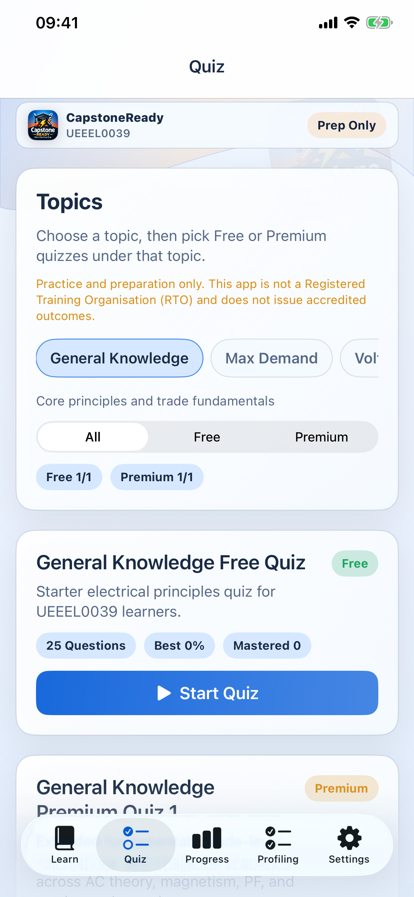
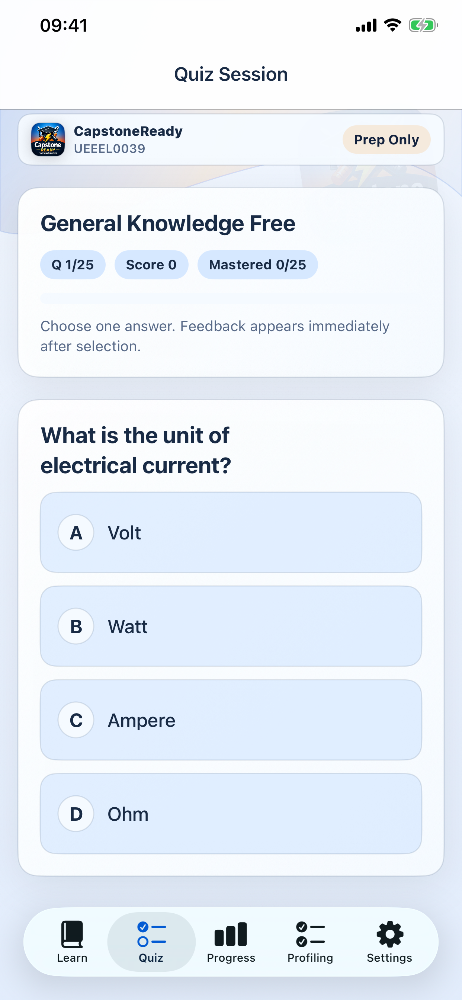

Know what needs attention next
The dashboard and workspace structure are designed to stop the common apprentice pattern of bouncing between tabs without a clear next move.
CapstoneReady is built to reduce the usual apprentice chaos: scattered profiling records, last-minute quiz cramming, missed reminders, and unclear next steps.
The product supports preparation and organisation. It does not replace your training provider, employer obligations, or the official licensing process.



Learn, practise, review progress, and jump back into the exact unit or workflow that needs attention next.
The apprentice experience is designed to feel supportive and deliberate. It aims to reduce friction around profiling, revision, reminders, and resume points without turning the app into a generic study dashboard.
The dashboard and workspace structure are designed to stop the common apprentice pattern of bouncing between tabs without a clear next move.
Capture records, evidence, approvals, and final outputs in a way that stays connected to the bigger readiness picture.
Learning modules and quizzes are not treated as a random side feature. They sit inside the same broader readiness workflow.
CapstoneReady is built to keep profiling, learning, quizzes, reminders, and progress in the same conversation.
Get your account, contacts, and basic workflow context sorted so the app can support the way you actually work.
Build the habit of updating profiling and evidence while the work is still fresh instead of trying to reconstruct it later.
Use the learning and practice side to revise specific topics or units without losing sight of the larger target.
Progress, reminders, and dashboard re-entry points help you resume work before it turns into a pile-up.

The quiz side is there to support readiness, not to pretend quiz score alone is the whole story.
Current public copy is aligned to the live release state: core app access stays easy to reach, while premium revision is clearly explained without pretending every premium lane is already live.